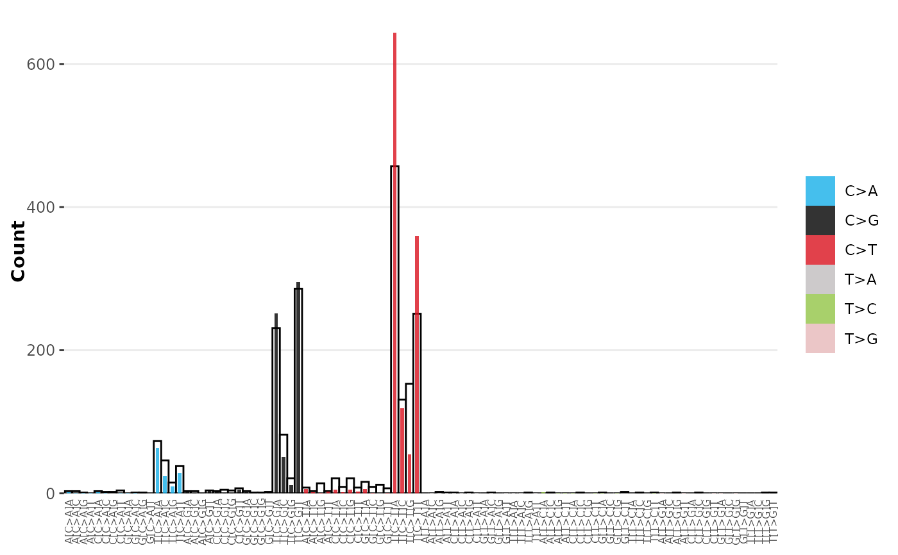

Visualise a signature overlayed on observed mutational profile
Source:R/sig_visualise.R
sig_visualise_overlay.RdVisualise a signature overlayed on observed mutational profile
Usage
sig_visualise_overlay(
signature,
catalogue,
channel_order = "auto",
palette = "auto",
na.value = "grey",
subtitle = NULL,
title = NULL,
options = vis_options()
)Arguments
- signature
a sigverse signature object representing the exposure model (data.frame)
- catalogue
a sigverse catalogue (tally) representing an observed mutational profile (data.frame)
- channel_order
How channels should be ordered on the X axis. By default 'auto' will automatically pick palette if channels are recognised as a standard COSMIC SBS/DBS/INDEL signature, or if not sorts in alphabetical order. Can also be a vector of channels in the order they should appear
- palette
colours based on the 'type' column. By default 'auto' will automatically pick a palette if the values of the 'type' column matches COSMIC SBS, Doublet or Indel mutations. Otherwise should be a named vector where names = types and values are colours.
- na.value
colour to use when type = NA
- subtitle
plot subtitle
- title
plot title
- options
other visualisation options. See
vis_options()for details
Examples
library(sigstats) # For combining signature models
library(sigstash) # For pulling signatures
library(TCGAcatalogues) # For pulling example TCGA catalogue data
# Load Signature
signatures <- sig_load("COSMIC_v3.3.1_SBS_GRCh38")
# Create a model (combination of signatures)
model <- sig_combine(signatures, model = c('SBS2' = 0.6, 'SBS13' = 0.4))
model_signature <- sig_combine_collapse_to_single_signature(model)
# Load a catalogue (Tally of variant types)
tally <- catalogues_load("BRCA", type = "SBS_96")
# Get tally of a single sample
sample = "TCGA-5L-AAT1-01A-12D-A41F-09"
tally_single_sample <- tally[[sample]]
# Visualise the overlay
sig_visualise_overlay(
catalogue = tally_single_sample,
signature = model_signature
)
#> ✔ All channels matched perfectly to set [sbs_96]. Using this set for sort order
#> ✔ All types matched perfectly to set [sbs_type]. Using this set for sort order
#> ✔ Types matched perfectly to palette [snv_type]
